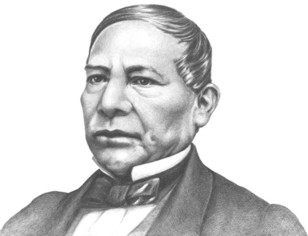
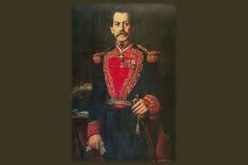

Personages que participaron
Benito Juarez

Entre los años de 1862 y 1867, sostiene de forma admirable el gobierno mexicano contra conservadores y francés, aun cuando andaba peregrinando entre México y Estados Unidos. Fue en esta época que sucede la Batalla de Puebla, lucha de la cual el Ejército Mexicano sale victorioso comandados por el Gral. Ignacio Zaragoza.
Ignacio Mejia Álvarez

Durante la Segunda Intervención Francesa, fue Jefe de la División Oaxaca y participó en la heroica Batalla de Puebla al lado del Gral. Ignacio Zaragoza, teniendo como trinchera el Fuerte de Guadalupe.
Para mayo de 1862 fue designado Gobernador Militar de Puebla, cargo que ocupó hasta marzo de 1863. Posteriormente durante el Sitio de Puebla, acción militar emprendida entre el 16 de marzo y el 17 de mayo de 1863, fue aprehendido y enviado a Franciaen donde estuvo prisionero. Casi un año después, en julio de 1864 logra fugarse y regresa México en octubre de 1865, incorporándose a las fuerzas liberales en Paso del Norte.
Porfirio Díaz

Su participación en la Batalla de Puebla el 5 de mayo se dio al defender el ala izquierda de la ciudad y repeliendo en dos ocasiones el ataque francés. Una vez que huyeron los franceses, González Ortega y Porfirio Díaz se dieron a la tarea de perseguirlos, hasta que Zaragoza se los impidió. Ese mismo día, Juárez recibió una carta de Zaragoza mencionándole los detalles de la batalla, y haciendo hincapié en "el empeño y bizarría del ciudadano general don Porfirio Díaz".
Sin duda, es un personaje de suma importancia en la historia de México, al ocupar el cargo de Presidente de México, en siete ocasiones; la primera del 5 de mayo de 1877 al 30 de noviembre de 1880. Posteriormente ocupó la presidencia para los periodos: 1884-1888, 1888-1892, 1892-1896,1896-1900,1900-1904,1904-1910. Su periodo de gobierno llevó el nombre de Porfiriato.
Ignacio Zaragoza

Al amanecer del 5 de mayo de 1862, el Gral. Ignacio Zaragoza arenga a sus soldados: "Nuestros enemigos son los primeros soldados del mundo, pero vosotros sois los primeros hijos de México y os quieren arrebatar vuestra patria". Ordena a Miguel Negrete dirigir la defensa por la izquierda; a Felipe Berriozábal por la derecha y a Porfirio Díaz que esté junto a él. Tras varias horas de lucha, la batalla no se decide, se enfrentan cuerpo a cuerpo mexicanos y franceses, finalmente, los invasores se retiran mientras Zaragoza grita: "Tras ellos, a perseguirlos, el triunfo es nuestro".El ejército francés considerado el mejor del mundo en ese tiempo, un ejército profesional, con la fama de haber ganado batallas en Argelia (Legión Extranjera) y de haber entrado al río Mekong en la Indochina Francesa (hoy Vietnam), al mando del General Conde de Lorencez, era derrotado estrepitosamente.
Miguel Negrete

Unido al ejército republicano y a las órdenes del general Ignacio Zaragoza, ambos se cubren de gloria en la Batalla de Las Cumbres y en la Batalla de Puebla el 5 de mayo de 1862, llegando a ser considerado como el segundo héroe de dicha batalla al defender el Fuerte de Loreto, al respecto Ernesto de la Torre comenta:
Aplicacion siete
Ulises Alvarez Corio